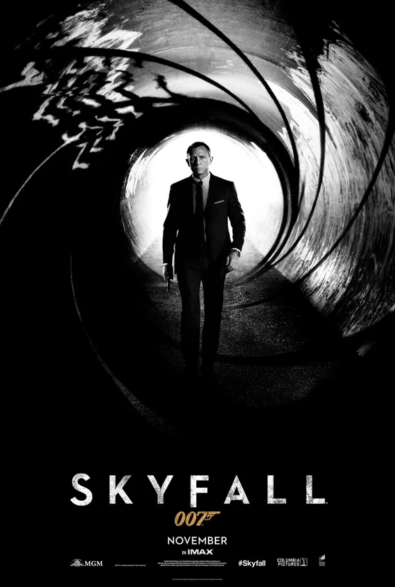
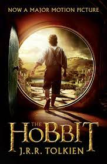
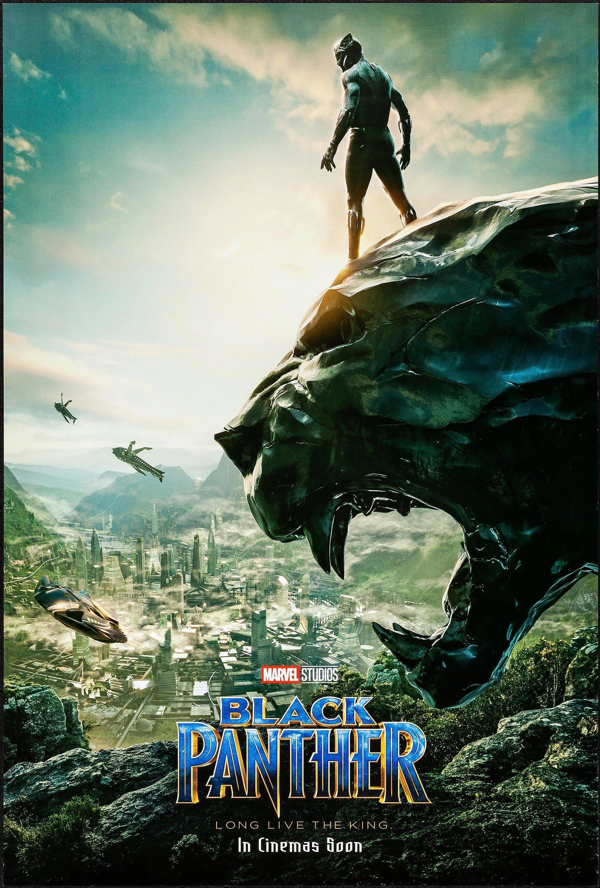
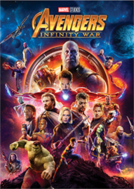
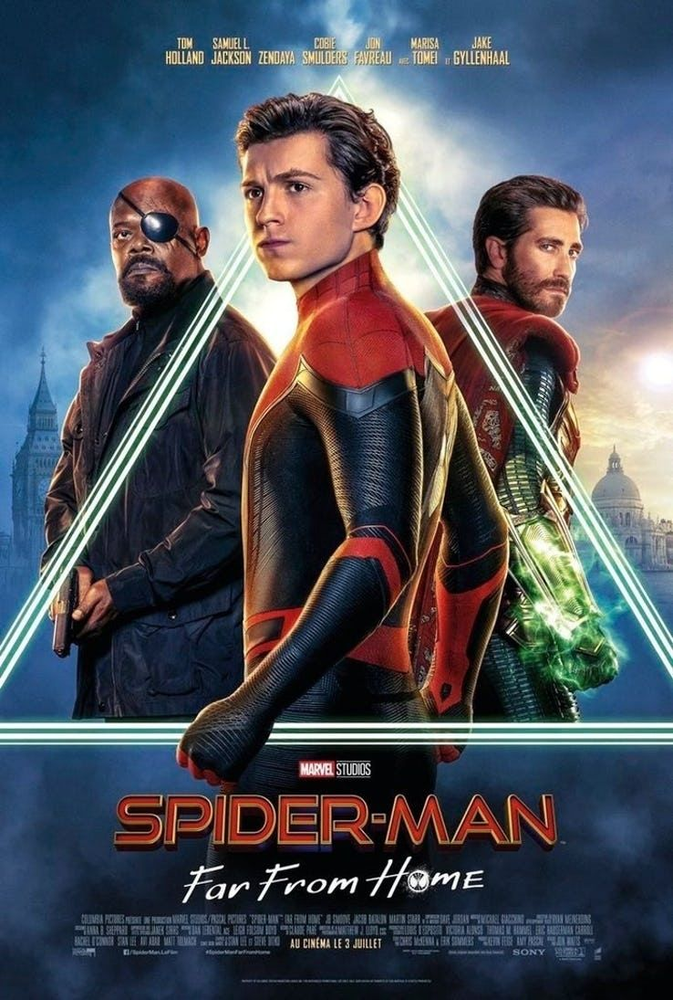
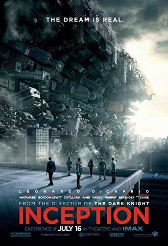
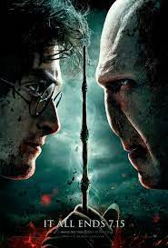

Prêt à regarder? Remplissez le formulaire proposé dans cette page
Tous les mois profitez de toutes les nouveautés série et cinéma. A partir du mois
prochain on vous propose tous les classiques du cinéma. Où que vous soyez. Tous
les films en VO, VOST, VF et plus d'options

Atlanta
- Infos -

Spider-Man: No Way Home
- Infos -

Black Panther
- Infos -

Avengers: Infinity War
- Infos -
Guardians Of The Galaxy
- Infos -

Spider-Man: Far From Home
- Infos -
Aquaman
- Infos -
A Star Is Born
- Infos -
The Walking Dead
- Infos -
San Andreas
- Infos -

Breaking Bad
- Infos -

Harry Potter et les Reliques de la Mort, partie 2
- Infos -